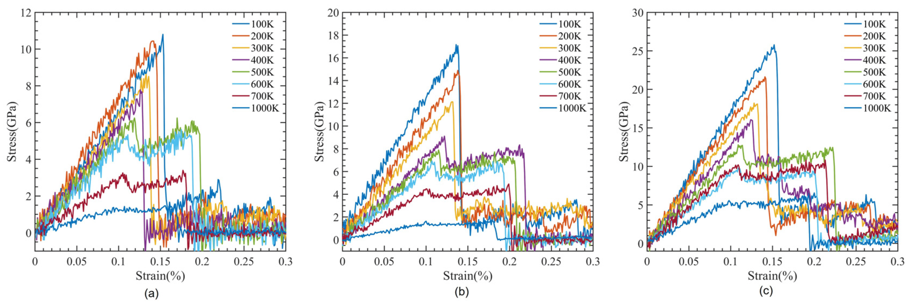

Download
Abstract
Understanding how the addition of carbon nanotubes (CNTs) affects the mechanical properties of polymethylmethacrylate (PMMA) composites is a challenge, given the varying performance of composites with different polymers. In this study, reactive force field molecular dynamics simulations were conducted on single-walled carbon nanotube (SWCNT)-reinforced PMMA, varying CNT diameters, volume fractions, and temperatures. The results demonstrate significant enhancement in the mechanical properties of PMMA composites with small amounts of SWCNT, and show that double-walled CNTs offer approximately twice the tensile strength of SWCNTs.
Figure 1: Tensile deformation of CNT-PMMA composites

Citation
Raj, Anshu, Sk Md Ahnaf Akif Alvi, Khayrul Islam, Mohammad Motalab, and Shuozhi Xu. 2023. “An atomistic study of the tensile deformation of carbon nanotube-polymethylmethacrylate composites.” Polymers 15 (13): 2956. https://www.mdpi.com/2073-4360/15/13/2956 .
@article{Raj23,
author = {Anshu Raj, Sk Md Ahnaf Akif Alvi, Khayrul Islam, Mohammad Motalab, Shuozhi Xu},
year = {2023},
title = {An atomistic study of the tensile deformation of carbon nanotube-polymethylmethacrylate composites},
journal = {Polymers},
volume = {15},
number = {13},
pages = {2956},
doi = {10.3390/polym15132956},
url = {https://www.mdpi.com/2073-4360/15/13/2956}}